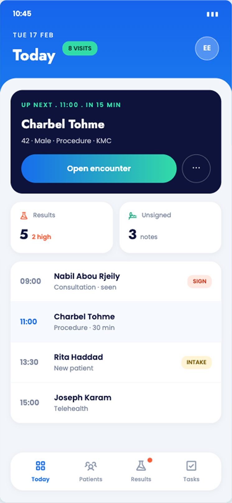
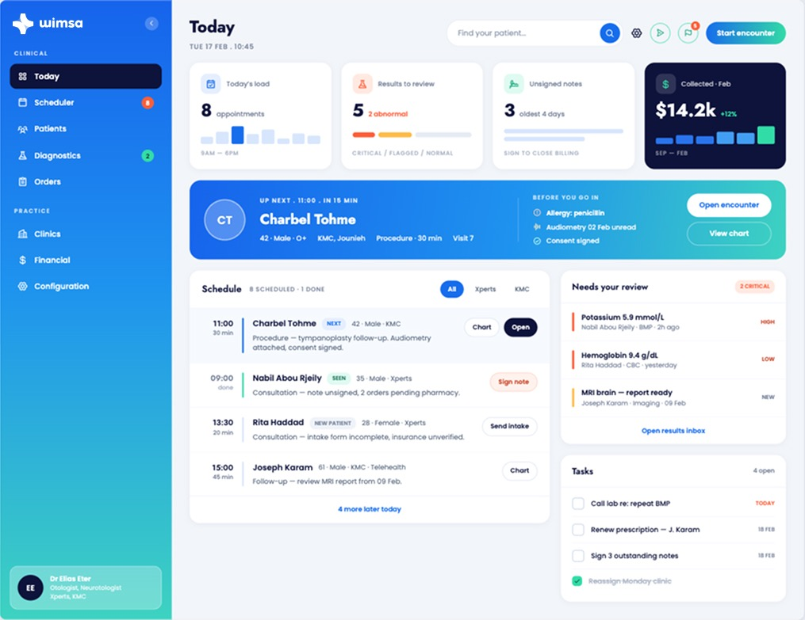
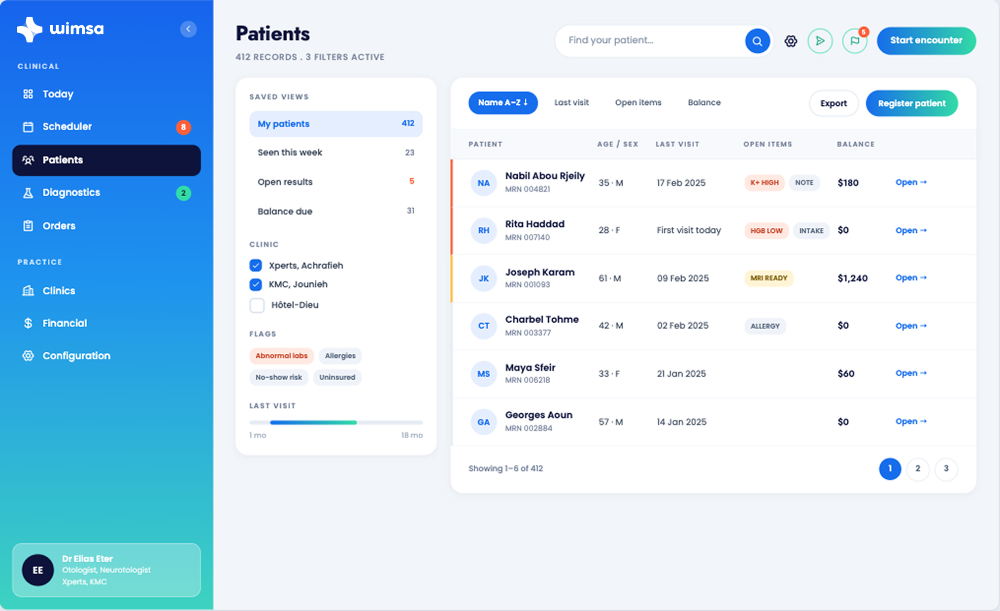
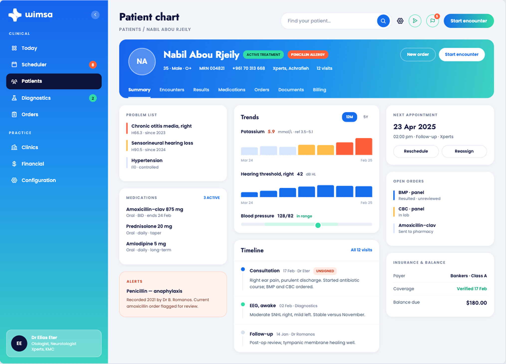
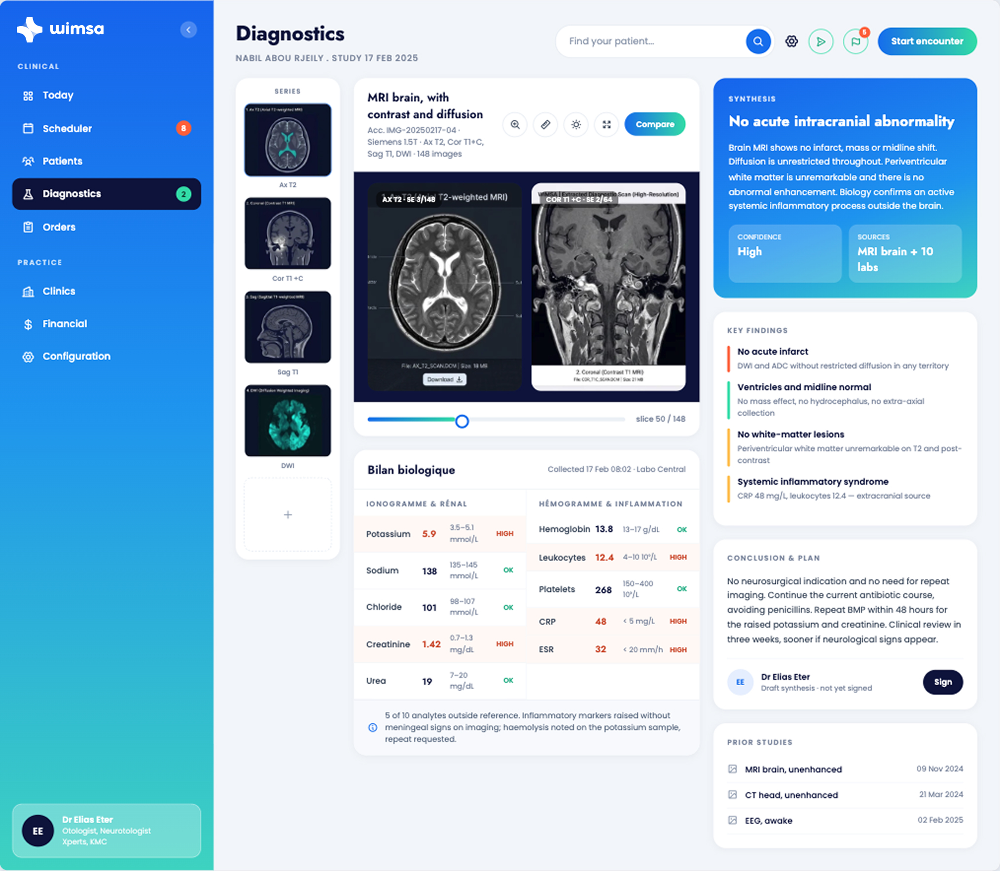
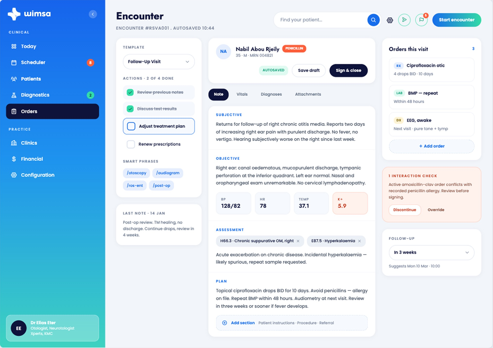
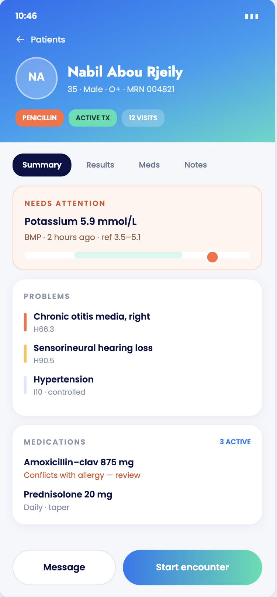

The next patient up front, results and unsigned notes at a glance, then the rest of the day's list.
Up nextSchedule
An end-to-end platform for medical records, scheduling, lab orders and task workflows, a responsive web console for the front desk and a companion mobile app for clinicians on the move.
Clinic software is notoriously dense: dozens of modules, tiny type, and screens designed for data rather than people. Wimsa had to carry that complexity while staying calm enough for a busy front desk and clear enough on a phone between rooms.
We designed two coordinated surfaces from one system: a spacious web console for scheduling, records and lab orders, and a focused mobile app for tasks and care actions. The same components, priorities and language carry across both.
We owned product design and front-end across the platform, from the scheduler’s live timeline to the drag-to-rank lab ordering and the mobile task workflows.
Organised a sprawling clinical domain (patient, history, clinic, diagnostics, financial) into a navigable left rail.
Designed the scheduler, lab-order builder and the mobile task views to share one visual language.
Implemented complex interactions (calendar grids, drag-to-rank lists, paginated tables) responsive and accessible.
A shared component library so web and mobile stay consistent as the platform grows.
A focused workspace for the clinic: the day's schedule, patient records, diagnostics and encounter notes, all in one window.





Everything a clinician needs between rooms, tasks, actions and patient context in their pocket.

The next patient up front, results and unsigned notes at a glance, then the rest of the day's list.

Flagged results surface first, followed by problems and active medications with allergy conflicts called out.
Day, week and agenda views with a live "now" line and patient-aware slots.
Panel and individual tests with searchable groups and drag-to-rank ordering.
Action checklists, priorities and reorder, care plans clinicians can actually run.
Demographics, insurance, allergies and history, secure and one click away.